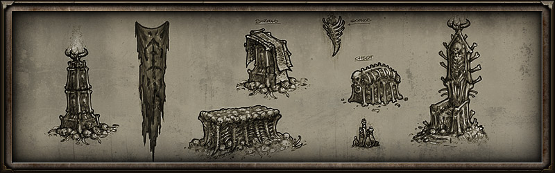

特性列表

- 双职业系统 allows you to combine any of five distinct skill classes to create your own customized playstyle. Advance your class mastery to unlock over 25 powerful skills and synergistic modifiers per class. Additional classes will be released with expansions.
- 不同的选择造成不同的结果 gives you power to shape the world and affect the fate of many. Tough decisions will leave significant impact as strangers on the road, families in need and even entire villages may live or perish based on your actions. With great power comes great responsibility and it is not always easy to predict the outcome of your choices in a world driven to desperate extremes.
- 与声望关联的任务系统 lets you improve your relations with different NPC groups to earn rewards (such as merchant discounts, new items, and additional quest lines) as your favor with them increases. However, aiding one faction could turn a rival faction into your enemy. Choose which side you will support!
- A Hand-Crafted World immerses you in humanity’s plight as you venture out into detailed environments filled with reminders of a once mighty empire on the brink of annihilation. Grim Dawn’s world strikes a fine balance between hand-crafted design and randomization.
- Refined Loot Drops result in less junk items and ensure more consistent rewards from hero and boss monsters.
- 充满暴力元素的战斗 featuring blood spatters, dismemberment and physics-based ragdoll. Crush enemies into a pulp, blow them to bits or send them flying over a ledge to their doom.
- 200个以上的英雄怪物 individually designed, named and configured with their own special skills provide unique, challenging experiences. You never know where or when enemy heroes may appear and even after hundreds of hours of play, you'll continue to find new names you've never seen before. Occasionally two or more heroes can spawn together to create an ultimate challenge!
- 可破坏的场景 give evidence of your massive battles as you kick through house doors, destroy furniture and smash crumbling walls to reveal secret passages.
- 动态天气系统 brings the world to life with region-specific climates and a variety of weather effects. A sunny day can cloud over with mild rain showers that build into a booming thunderstorm. Variable wind gusts blow grass and affect objects like windmills and lanterns.
- 多人游戏 allows you to connect with old friends or make new enemies in co-op and pvp modes.
- 基于图纸的锻造系统 produces powerful equipment and consumables. Collect recipes from enemies, chests or quest rewards and add them to your crafting compendium. Rare recipes can call for exotic items found in the remote corners of the world. Higher tier recipes can use lower tier crafted items as ingredients, resulting in a pyramidal build up to the most uber crafted accessories.
- 可旋转的游戏镜 enhances the three-dimensionality of the world and gameplay while levels are still designed so that players are not forced to rotate the camera.
- Mod 工具 will allow players to create their own content and to share them with the rest of the world. The amount of content available in Grim Dawn will be as limitless as the imaginations of the players.
- 更多的特性还在开发当中，将在游戏接近发售时公布。